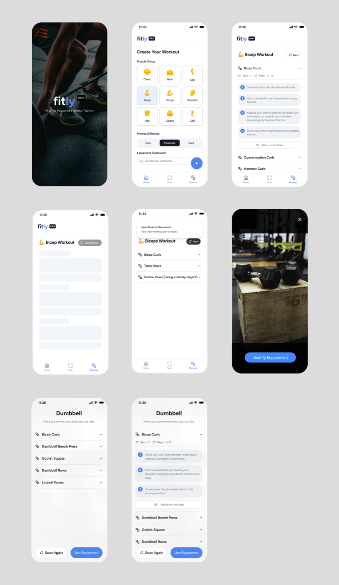

The brief.
Fitly came from a personal observation: new gym users often struggle to identify equipment, choose the right exercises, or know what to do next. The concept explores an AI-based personal trainer that generates workouts by muscle group, difficulty level, and available equipment.
The goal was to shape a product that feels useful before it feels flashy, as a fitness companion that makes the gym less intimidating and gives users clear next actions.
Product direction.
The core app experience centers on guided workout generation, equipment scanning, and concise exercise recommendations. The brand system supports that direction with a clean, energetic visual language that feels modern without turning the product into another loud fitness app.

The interesting problems.
- Reducing gym anxiety. The app concept focuses on helping users understand equipment and exercises quickly, especially when they are new to a space.
- Turning AI into a practical flow. Workout generation has to feel specific and useful, not like a generic prompt result pasted into an app screen.
- Designing around scanning. The equipment scan tool needs to feel fast, obvious, and trustworthy because it becomes the bridge between the physical gym and the app.
- Building the brand around guidance. The visual system balances fitness energy with calm structure so the product feels like a coach, not a hype machine.
What I'd build next.
The next step would be turning the concept into an interactive prototype: scan flow, generated workout states, exercise detail screens, and onboarding that collects goals, experience level, and available equipment.